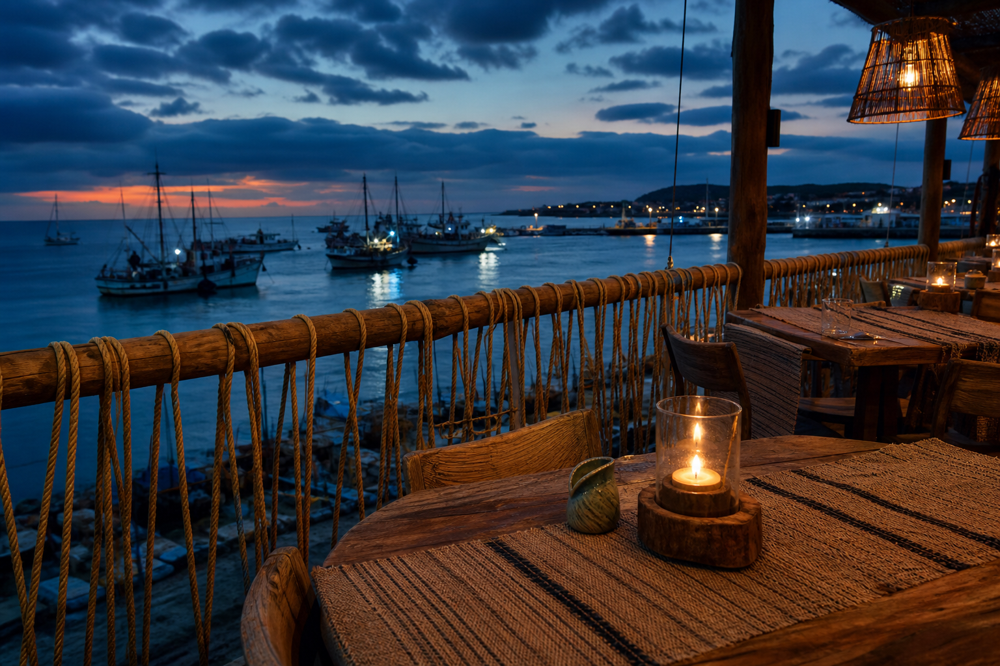

Salt Loom
Warp of tide. Weft of fire. Table between.
Place · Harbor terrace · salt air dusk
Evening menu
Shellfish truth stays above the fold while courses stream in — hear-do lattice.
Static menu active · generative layer skipped · envelope unchanged
Reserve
Imagist line for mood; plain grammar for holds.
Craft note
Loom warp as craft metaphor: tension holds pattern — envelope holds fill.